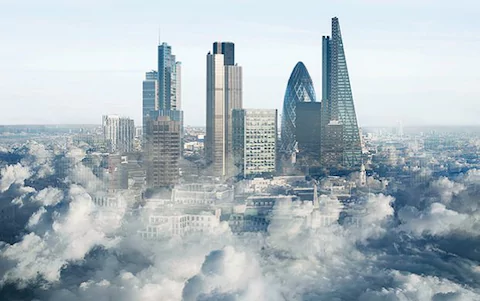
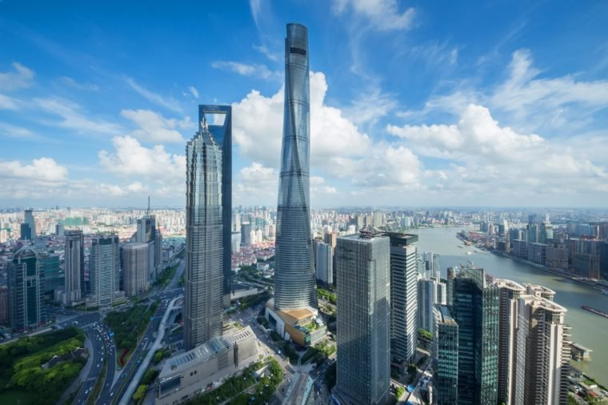

Топ 10 компаній світу
ICBC
Indusrial and Commercial Bank of China (ICBC) — найбільший банк в КНР, перебуває у державній власності. Один з чотирьох найбільших комерційних банків Китаю (Серед інших це Bank of China, Agricultural Bank of China та China Construction Bank). За даними британського журналу The Banker, за загальними активами і ринковою капіталізацією, ICBC, станом на 2013 рік, є найбільшим банком у світі з обсягом капіталізації в 160,6 мільярда доларів. Загальні активи ICBC станом на 2011 рік становили 15,476 трлн CNY (близько 2,186 трлн доларів), чистий прибуток за 2011 рік склав 208,44 млрд CNY (29,45 млрд доларів). Він був заснований як компанія з обмеженою відповідальністю 1 січня 1984 року. Головний офіс у Пекіні.
Apple
Apple Inc. — американська технологічна компанія з офісом у Купертіно (Каліфорнія), яка проектує та розробляє побутову електроніку, програмне забезпечення та онлайн-сервіси. Є першою американською компанією, чия капіталізація перевершила 1 трлн доларів США. Це сталося під час торгів акціями компанії 2 серпня 2018 року. Цього дня компанія також стала найдорожчою публічною компанією за всю історію, обійшовши капіталізацію попереднього рекордсмена — компанії PetroChina (1,005 трлн доларів у листопаді 2007 року).
Amadeus
Amadeus - одна з найбільших в світі глобальних дистриб'юторських компаній. Заснована в 1987 році. Штаб-квартира компанії знаходиться в Мадриді (Іспанія). Головний процесинговий центр - в Ердінге (Німеччина), є одним з найбільших в світі центрів баз даних цивільного призначення, що спеціалізуються на туризмі. Щодня в Центрі здійснюється понад мільярд транзакцій і обробляється понад 3 мільйони бронювань. Компанія має 5 регіональних центрів та 3 R&D центру по всьому світу. Персонал компанії налічує понад 8,9 тис. осіб.
ExxonMobile
ExxonMobil Corporation — одна з найбільших у світі нафтових компаній, а також одна з найдорожчих корпорацій у світі. На 2013 компанія має капіталізацію $403,7 млрд., поступаючись за цим показником лише компанії Apple ($415,7 млрд). Компанія веде свою історію від нафтового тресту Standard Oil, заснованого в 1882 знаменитим мільйонером Джоном Рокфеллером. У своєму нинішньому вигляді компанія з'явилася в 1999 в результаті злиття компаній Exxon і Mobil. В наш час на компанію працюють більше 80 тис. співробітників по всьому світу (з них 30 тис. — в США). Найвідомішими брендами компанії є Exxon, Esso і Mobil, під якими випускаються автомобільні масла та інші паливно-мастильні матеріали.
Magento
Magento — система керування вмістом з відкритим кодом, призначена для створення інтернет-магазинів. Поширюється за ліцензією OSL 3.0. Magento — одна з найпопулярніших відкритих систем для організації електронної комерції в мережі: на базі цієї платформи створено понад 100 тисяч інтернет-магазинів, сторонніми розробниками створено більше 2 тисяч розширень, спільнота проекту налічує близько 375 тисяч учасників, код платформи був завантажений більше 2,5 млн разів, через системи на базі Magento в 2010 році було продано товарів на 25 мільярдів доларів. За кілька років свого існування платформа кілька разів була лауреатом премій «Best of Open Source Software Awards» і «SourceForge Community Choice Awards». Платформа Magento Commerce складає близько 30% загальної частки ринку. Це програмне забезпечення створене з використанням Zend Framework. Сирцевий код Magento поширюються в рамках схваленої організацією Open Source Initiative (OSI) ліцензії Open Software License (OSL) v3.0, близької за своєю суттю до ліцензії AGPL, але не сумісної з GPL. Особливість ліцензії OSL полягає в тому, що якщо хтось модифікує програму, але не буде поширювати результат своєї роботи, а просто задіює його на своєму сайті, то він все одно зобов'язаний відкрити код внесених змін і поширювати його під тією ж ліцензією. При цьому ліцензія OSL не забороняє комерційне використання продуктів.
Ubisoft
Ubisoft Entertainment S.A. (укр. Юбісофт Ентертеймент, раніше Ubi Soft ) — французька компанія, яка займається видавництвом та розробкою відеоігор, зі штаб-квартирою в Монтреї (Сена-Сен-Дені), Франція. Компанія має представництва по всьому світі: 25 студій в 17 країнах світу, включаючи Канаду, Іспанію, Китай, США, Німеччину, Болгарію, Україну, Румунію, Італію, та філії в 26 країнах світу. Ubisoft є одним з найбільших ігрових видавців в Європі і США.
Mitsubishi
Mitsubishi Group — японська група підприємств. Штаб-квартира міститься в Токіо. Фірма Мітсубіші була заснована на початку 1870-х років Івасакі Ятаро. Перших три роки компанiя мала назву Tsukumo Shokai Shipping Co. З 1873 року назва була змiнена на Mitsubishi. Зі злиття родинних гербів засновників виникла всесвітньо-відома торгова марка Mitsubishi — три ромби. Ще на початку 20-го століття Mitsubishi перетворилася в величезну фірму, котра до закінчення Другої світової війни належала одній родині. Після завершення війни в 1946 під тиском союзників «батьківська»-компанія власник Міцубісі хонся була реорганізована. Замість однієї компанії з'явилося 44 незалежні фірми.
Wix
Wix.com — міжнародна хмарна платформа для створення та розвитку інтернет-проектів, що дозволяє будувати професійні сайти і їхні мобільні версії на HTML5 з допомогою інструментів drag-and-drop. Розширювати функціональність сайтів можна за рахунок додатків, розроблених як розробниками Wix, так і сторонніми компаніями. Наприклад, додавати модулі соціальних мереж, інструменти для онлайн-торгівлі та електронних розсилок, контактні форми, блоги тощо. Сервіс доступний 11 мовами: англійською, російською, французькою, німецькою, італійською, іспанською, португальською, польською, японською, корейською та турецькою. Wix працює по бізнес-моделі freemium, пропонуючи можливість безкоштовно створювати сайти і розвивати їх, купуючи корисні поліпшення. Наприклад, тарифи Premium дозволяють підключити до сайту власний домен, прибрати банери Wix, додати онлайн-магазин, отримати додаткове місце для зберігання даних, купони на рекламу та ін.
Admixer
Admixer Advertising Technologies - міжнародна компанія, створена в 2008 році, спеціалізується на розробці власних продуктів в сферах реклам та інформаційних технологій. Спільно з Google і OLX виступили ініціаторами створення українського представництва міжнародної мережі - IAB Ukraine (Interactive Advertising Bureau). Входить в топ 5 найбільших SSP на ринку України і топ 54 в світі. Ще в 2008 році команда Admixer під брендом Admixer Advertising Network запустила рекламну мережу в Україні і відразу ж почали розробляти свій перший продукт, яким став Admixer. Publisher - рішення по монетизації трафіку для видавців сайтів. Зараз компанія працює на ринках України, Білорусії, Грузії, Казахстану, Росії, Латвії та налічує понад 200 співробітників.
Toyota Motor
Тойота Мотор Корпорейшн — японська автомобільна корпорація, що входить до складу фінансово-промислової групи «Тойота». Одна з найбільших автомобільних компаній світу. Випускає свою продукцію під різними марками, зокрема, «Дайхацу», «Лексус», «Тойота», «Хіно». Штаб-квартира розташована у місті Тойота, префектура Айті, Японія. Компанія Тойота за своїм рівнем ринкової капіталізації (бл. 220 млрд доларів США у травні 2007 р.) є найдорожчою у світі серед автомобілебудівних компаній.
1 / 3
2 / 3

3 / 3

❮
❯
Друга сторінка
Інформація